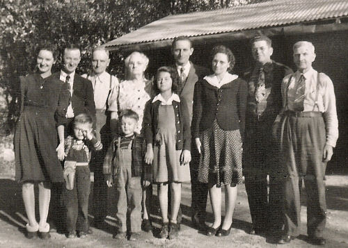

| A History of the Juvenal Family | |
 |
Photo: A gathering at the Juvenal home, near Placerville California, 1944. The boy on the right is Bob, and behind him are John and Maude Juvenal.
**The following information was provided by one of Bob's cousins. Pierre Juvenal, native of Roure France, married Marie Gautier, moved to England in 1685. David Jouvenal (spelling changed) born in England in 1706. |
|
David Juvenall (spelling changed) born in England around 1730, moved to America in 17??.
John Juvenall born in Philadelphia PA July 14, 1769. James Madison Juvenal (spelling changed) born in Ohio October 14, 1806. Benjamin Franklin Juvenal born in Vermillion County Illinois 1843. John William Juvenal born in Kansas January 4, 1879; married Maude H. Mumford 1902; died in Placerville CA July 29, 1958. **The following information was provided by Clara Fairbairn (Bob's Mom) regarding the family of John and Maude Juvenal. John worked at a variety of jobs, including barber, farming, lumber, and retail stores. Son Harold born in Oklahoma 1902. Son Benjamin (Bennie) born in Nebraska 1904. Bennie born as a "blue baby", was somewhat disabled throughout his life. Son Roland born in Kansas 1906. Daughter Clara born in Natoma Kansas 1908. Family moved to Oceanside CA 1910, son Floyd born 1911. Family moved to Brawley CA 1912, son Milton born 1912, died at age 4 months. Family moved to Porterville CA 1914, son Ralph born 1914. Family moved to Old River CA near Bakersfield 1916, daughter Evelyn born 1916. Mother, Maude, became ill (nervous depression?), went to State Hospital in Stockton CA. During this time, Evelyn went to live with "Aunt Clara" in Tulsa Oklahoma; Clara lived with "Aunt Kate" in Whittier CA; John and sons stayed together. Difficult time while family was "broken up". Family moved to Stockton CA 1918, to be nearer mother. Clara rejoined family in Stockton, but Evelyn remained in Tulsa Oklahoma. Maude released from hospital, family moved to Dunsmuir CA 1920. Clara remembers this as a happy time for the family. Family moved to Chico CA 1922. Family moved to Placerville CA 1924. Evelyn rejoined family. Clara attended Nazarene Church, finished High School in Placerville. After High School, Clara attended Pasadena College for one year. In 1928, Clara went to Sacramento CA to attend Heald's Business College; stayed in the home of "Sparky" Wagner and his wife. Clara married Robert Fairbairn in 1930, moved into two-room house at 3912 Marysville Rd., Del Paso Heights CA. They had two children, Barbara and Robert. For the last few years of her life, Clara lived in Michigan, to be near her daughter Barbara. Clara passed away in Farmington Hills, Michigan on September 8, 2002. |
|